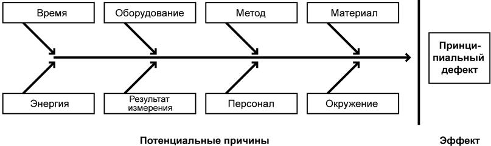
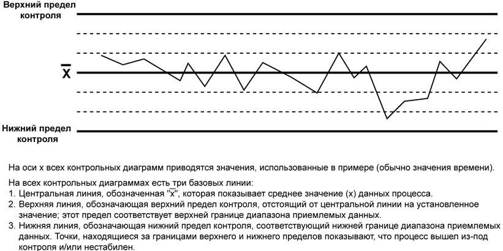
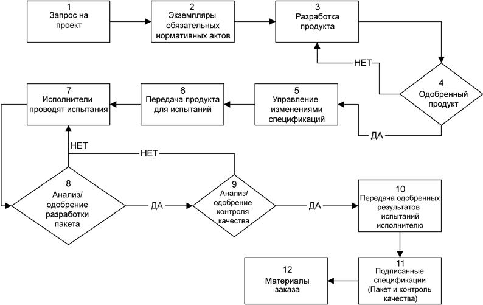
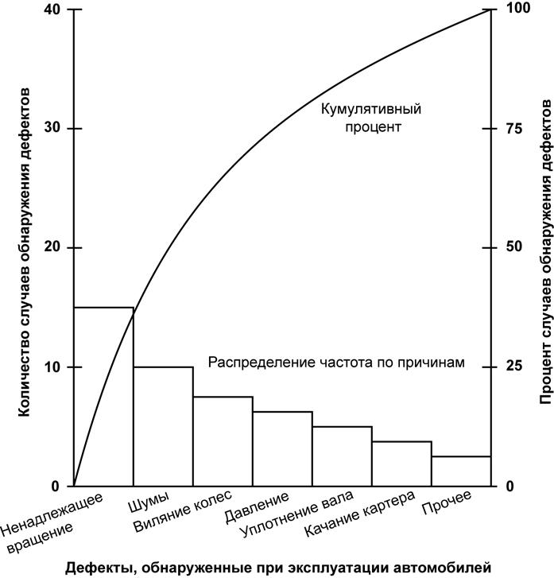

Процесс контроля качества(п.8.3, рис.11.1)
Процесс контроля качества включает в себя мониторинг определенных результатов проекта для того, чтобы установить, удовлетворяют ли они соответствующим стандартам качества, и определить пути устранения причин, вызывающих неудовлетворительные результаты.
Управление качеством должно производиться на всех этапах выполнения проекта.
Стандарты качества включают в себя процессы проекта и цели продукта.
Результаты проекта включают в себя результаты поставки и результаты управления проектом, например, стоимость и выполнение расписания.
Контроль качества обычно осуществляется отделом контроля качества или иным подразделением, имеющим схожее название. Контроль качества может включать в себя операции по устранению причин, вызывающих неудовлетворительное исполнение проекта.
Команда управления проектом должна обладать знаниями и навыками статистического анализа качества, особенно методом выборочных оценок и теорией вероятности, необходимых для того, чтобы выразить в цифрах результаты управления качеством. Помимо всего прочего, для команды проекта, возможно, окажется полезным знать различия между следующими парами терминов:
− Предотвращением (недопущением ошибок в процессах) и проверкой (недопущением попадания ошибочных результатов к потребителю).
− Выборочным контролем свойств (результат либо удовлетворителен, либо нет) и выборочным контролем параметров (результат оценивается по непрерывной шкале, измеряющей степень удовлетворенности).
− Особыми причинами (необычными событиями) и общими причинами (вариантами нормального хода процесса). Общие причины также называются случайными причинами.
− Допустимым отклонением (результат приемлем, если он находится в допустимых рамках) и контрольными границами (процесс управляем, если результат находится в контрольных границах).
8.3.1 Процесс контроля качества: входы
8.3.1.1 План управления качеством см. п. 8.1.3.1.
8.3.1.2 Результаты оценки качества см. п. 8.1.3.2.
8.3.1.3 Контрольные списки процедур контроля качества см. п. 8.1.3.3.
8.3.1.4 Активы организационного процесса см. п. 4.1.1.4, рис.6.1.
8.3.1.5 Информация об исполнении работ (п. 4.4.3.7, рис.6.1), включая техническое измерение исполнения, состояние завершенности результатов поставки проекта и исполнение необходимых корректирующих действий - являются важной входящей информацией для контроля качества. Информация, содержащаяся в плане управления проектом, и относящаяся к планируемым или ожидаемым результатам, равно как и информация о фактических результатах и выполненных запросах на изменения, должна быть доступной.
8.3.1.6 Одобренные запросы на изменение Одобренные запросы на изменения (раздел 4.4.1.4) могут содержать такие изменения, как исправленные методы работы и исправленное расписание.
Периодически выполняемые одобренные изменения необходимо тщательно проверять.
8.3.1.7 Результаты поставки см. п. 4.4.3.1, рис.6.1.
8.3.2 Процесс контроля качества: инструменты и методы
Рассмострим основные инструменты качества.
8.3.2.1 Диаграмма причинно-следственных связей, которую также называют диаграммой Ишикавы или диаграммой рыбьего скелета, иллюстрирует связь различных факторов с возможными проблемами или эффектами. На рис. 11.3 показан пример диаграммы причинно-следственных связей.

Рисунок 11.3 - Диаграмма причинно-следственных связей
8.3.2.2 Контрольные диаграммы предназначены для определения, насколько стабильно протекает тот или иной процесс и насколько предсказуемо его развитие.
Контрольные диаграммы могут использоваться в качестве инструмента по сбору данных для отображения случаев, когда в процессе возникают различные изменения, вызванные особыми причинами, способные создать условия, не поддающиеся контролю. Контрольные диаграммы также дают наглядное представление о развитии процесса во времени. Они представляют собой графическое отображение взаимодействия переменных процесса в течение процесса и дают ответ на вопрос: находятся ли переменные процесса в рамках установленных пределов? При изучении заранее предопределенных точек ввода данных на контрольной диаграмме, можно выявить значения, подверженные колебаниям в широких пределах, резкие всплески и провалы в процессе или плавный тренд возрастания отклонения. При помощи контрольной диаграммы также можно определять, как внесенные изменения повлияли на улучшение процесса. Это осуществляется посредством постоянного мониторинга выходных данных процесса во времени. Если процесс протекает в рамках установленных пределов, то вносить какие-либо коррективы не требуется. Вносить коррективы в процесс следует тогда, когда процесс выходит за рамки установленных пределов.
Обычно значения верхних и нижних контрольных границ устанавливается в пределах +/- 3 сигма (то есть, стандартное отклонение).Контрольные диаграммы могут использоваться для отображения жизненного цикла, как проекта, так и продукта. Например, использование контрольных диаграмм в проекте позволяет определить, насколько отклонения по стоимости и отклонения по срокам выходят за рамки допустимых пределов (например, +/- 10 процентов). А использование контрольных диаграмм в продукте позволяет определить, насколько приемлемо или неприемлемо количество обнаруженных во время испытания дефектов с точки зрения стандартов качества, принятых в организации. Контрольные диаграммы можно использовать для наблюдения за любыми выходными переменными. Хотя контрольные графики чаще всего используются для отслеживания повторяющихся операций, например, изготовление партий деталей, они также могут использоваться для наблюдения за колебаниями издержек и исполнением расписания, за объемом и частотой изменения содержания проекта, за ошибками в документах проекта или другими результатами управления. Это позволяет определить, насколько действенным является процесс управления проектом. На рис. 11.4 приведен пример контрольной диаграммы исполнения расписания проекта.

Рисунок 11.4 - Пример контрольной диаграммы исполнения расписания проекта.
8.3.2.3 Диаграммы зависимостей помогают анализировать причины возникновения проблем и представляет собой графическое отображение процесса. Существует множество различных стилей представления диаграмм зависимостей, но все они отображают операции, точки принятия решений и порядок обработки данных. Диаграммы зависимостей дают представление о том, как различные элементы системы взаимодействуют между собой.
На рис.11.5 приведен пример диаграммы зависимостей для контрольных оценок на этапе проектирования. Диаграмма зависимостей может оказать помощь команде проекта в прогнозировании, где и какие могут возникнуть проблемы с качеством, и, следовательно, в разработке мер по их предотвращению.

Рисунок 11.5 - Пример диаграммы зависимостей процесса
8.3.2.4 Гистограмма - это столбиковая диаграмма, отображающая распределение переменных. Каждая колонка представляет атрибут или свойство проблемы/ситуации. Высота колонки обозначает относительную частоту свойства. Данное инструментальное средство позволяет выявить причину проблемы по форме и ширине распространения.
8.3.2.5 Диаграмма Парето (рис.11.6) представляет собой особый тип гистограммы, упорядоченную по частоте возникновения, которая отображает, какое количество обнаруженных дефектов являются следствием причин, относящихся к определенному типу или категории. Метод Парето используется, прежде всего, для оценки несоответствий.Порядок ранжирования элементов в диаграмме Парето используется для принятия решений о проведении корректирующих действий. Команда проекта должна в первую очередь принимать решения по тем проблемам, которые являются причиной наибольшего количества дефектов. Диаграммы Парето логически связаны с Законом Парето, который заключается в том, что относительно малое число причин обычно приводит к большинству проблем или дефектов. Этот закон также известен как принцип 80/20, согласно которому 80 процентов проблем создается 20-ю процентами причин. Диаграммы Парето также могут использоваться для суммирования всех типов данных для проведения анализов 80/20.

Рисунок 11.6 - Диаграмма Парето
8.3.2.6 Схема прогноза отображает историю и модель изменений. Схема прогноза представляет собой линейный график, отображающий точки ввода данных, расположенные на графике в порядке их возникновения. Схема прогноза дает представление о трендах процесса во времени, колебаниях во времени, а также о позитивных и негативных изменениях процесса во времени. При помощи схем прогноза также проводится анализ тенденций. Анализ тенденций включает в себя использование математических методов для прогнозирования будущих результатов на основании результатов предыдущего опыта.
Анализ тенденций часто используется для наблюдения за следующими показателями:
− Техническое исполнение. Сколько ошибок или дефектов выявлено и сколько еще не исправлено.
− Исполнением расписания и стоимости. Какое количество операций, имеющих значительные отклонения, выполнено в каждый период времени.
8.3.2.7 Диаграмма разброса отображает модель взаимоотношений между двумя переменными. При помощи данного инструмента квалифицированная команда может проводить изучение и определять возможные взаимоотношения между изменениями, наблюдаемыми в двух переменных. На графике против зависимых переменных отображаются независимые переменные. Чем ближе друг к другу расположены точки на диагональной линии, тем более тесно они взаимосвязаны.
8.3.2.8 Выборочные оценки предполагают выбор части интересующей совокупности для проверки (например, случайный выбор десяти чертежей из списка в семьдесят пять единиц). Представительная выборка зачастую может сократить стоимость управления качеством. Существует прочная научная основа для проведения статистических выборок. В некоторых областях приложения у команды управления проектом может возникнуть необходимость освоить набор технических приемов выборочных оценок.
8.3.2.9 Инспекция представляет собой изучение работы продукта с целью определения его соответствия стандартам. Как правило, результаты инспектирования включают в себя измерения. Инспекция может проводиться на любом уровне.
Например, инспекция может проводиться по отдельной операции или по конечному продукту проекта. Инспекция также может обозначаться иными терминами: обзор, экспертная оценка, аудит и сквозной контроль. В некоторых областях приложения эти термины имеют узкое и специальное значение.
Инспекция также используется для подтверждения устранения дефектов.
8.3.2.10 Проверка исправления дефектов - это действие, предпринимаемое отделом контроля качества или организацией, имеющей схожее название, с целью удостовериться, что дефекты продукта исправлены, и сам продукт полностью соответствует требованиям или спецификации.
8.3.3 Процесс контроля качества: Выходы
8.3.3.1 Результаты контроля качества представляют собой результаты мероприятий по контролю качества, переданные в рамках обратной связи в отдел обеспечения качества (п. 8.2) с целью оценить заново и произвести анализ стандартов качества и процессов, существующих в исполняющей организации.
8.3.3.2 Утвержденное исправление дефектов. Отремонтированные изделия подвергаются повторному инспектированию и либо принимаются, либо отклоняются, о чем сообщается в уведомлении о принятом решении (см.п.4.4, рис.6.1). Отклоненные в результате повторного инспектирования изделия могут быть направлены на дальнейшее устранение дефектов.
8.3.3.3 Базовый план по качеству (обновления) см. п. 8.1.3.5.
8.3.3.4 Рекомендованные корректирующие действия. Корректирующее действие (п. 4.5.3.1, рис.6.1) предполагает проведение определенных мероприятий, вызванных результатами операций по контролю качества, указывающих на то, что процесс производства или разработки выходит за пределы установленных параметров.
8.3.3.5 Рекомендованные предупреждающие действия. Предупреждающее действие (п. 4.5.3.2, рис.6.1) предполагает проведение специального мероприятия, возможно, вызванного результатами измерений контроля качества, по предупреждению возникновения условий, при которых процессы производства или разработки могут выйти за пределы установленных параметров.
8.3.3.6 Запрошенные изменения. Если в результате рекомендованных корректирующих или предупреждающих действий требуется внесение изменений в проект, то в соответствии с утвержденными процедурами общего управления изменениями необходимо инициировать запрос на изменение (п. 4.4.3.2, рис.6.1).
8.3.3.7 Рекомендованное исправление дефектов. Дефект - это когда компонент не удовлетворяет определенным требованиям или параметрам спецификации, и нуждается в замене или ремонте. Выявление дефектов и предложения по устранению дефектов производятся отделом по контролю качества или организацией, имеющей схожее название. Команда проекта должна прилагать все возможные усилия для того, чтобы свести к минимуму количество ошибок, способных вызвать необходимость исправления дефектов. Для формирования набора рекомендаций по исправлению дефектов, можно использовать журнал регистрации дефектов. Такой подход чаще всего применяется в автоматизированных системах по обнаружению и решению проблем.
8.3.3.8 Активы организационного процесса (обновления):
− Заполненные контрольные списки. Когда используются контрольные списки, заполненные контрольные списки должны стать частью архива проекта (см. п. 4.1.1.4, рис.6.1).
− Документация о накопленных знаниях. Причины отклонений, обоснования в пользу выбора того или иного корректирующего действия, и другие знания, накопленные в результате процесса контроля качества, должны быть оформлены документально для того, чтобы стать частью исторической базы данных, как для данного проекта, так и для других проектов исполняющей организации. Накопленные знания оформляются в виде документов на всем протяжении жизненного цикла проекта, но к моменту закрытия проекта все должно быть выполнено (п. 4.1.1.4, рис.6.1).
8.3.3.9 Утвержденные результаты поставки. Цель контроля качества - определение соответствия результатов поставки определенным требованиям. Результатом процесса контроля качества является утвержденные результаты поставки.
8.3.3.10 План управления проектом (обновления). План управления проектом подлежит обновлению с тем, чтобы отобразить изменения в плане управления качеством, вызванных результатами процесса контроля качества. Запрошенные изменения (добавления, изменения, удаления) плана управления проектом и вспомогательных планов подвергаются экспертной оценке и вносятся в соответствующие планы в процессе общего управления изменениями (п. 4.6, рис.6.1).